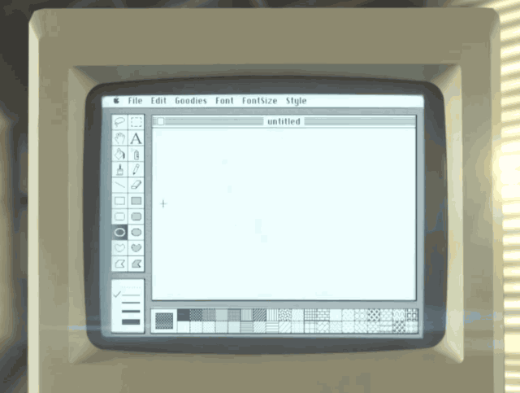
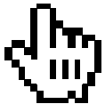
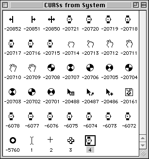
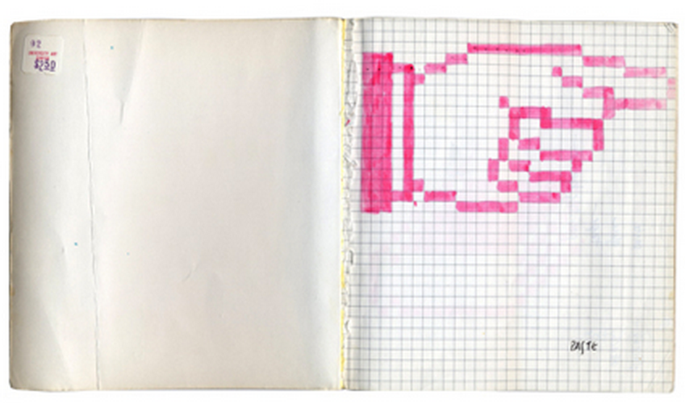
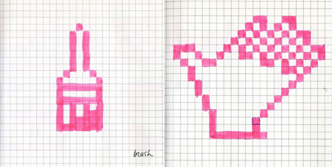
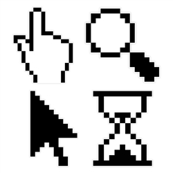
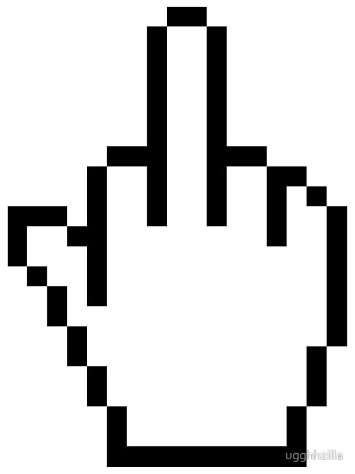

The Mouse Cursor
A cursor is an indicator used to show the current position for user interaction on a computer monitor or other display device that will respond to input from a text input or pointing device.
The mouse cursor is also called a pointer, owing to its resemblance in usage to a pointing stick.

Why is it slanted?
The mouse, and therefore the mouse cursor, was invented by Douglas Englebart, and was initially an arrow pointing up.
When the XEROX PARC machine was built, the cursor changed into a tilted arrow. It was found that, given the low resolution of the screens in those days, drawing a straight line and a line in the 45 degrees angle was easier to do and more recognizable than the straight cursor.
Susan Kare (who did most of the icons for the original Mac) and was one of the first apple employees hired by Steve jobs. She designed the open/closing hand cursor to identify selection from "grabbing". MacPaint (on the original 1984 Macintosh) used it as the "pan" icon as well as Apple's other icons.

Steve Jobs borrowed it for his software followed by Bill Gates who borrowed it after him.

Some argue that the "glove" hand icon was inspired by Mickey Mouse due to the threee stripped gloves. However, there hasn’t been any research confirming this fact. 
The icon was tweaked slightly over the course of classic System/MacOS to add things like a countdown waiting animation

concept drawing: Intial Pixel drawings for Apple by Susan Kare   
The caret is the flashing vertical bar that is displayed when the user is typing into a text box or other text editor. The caret is independent of the pointer; by default, Windows hides the pointer while the user is typing
Capital I text cursor or the "I-Beam Pointer" indicates that the text can be highlighted, inserted, or changed.
Today, due to new touch technology, the mouse cursor is replaced by our finger. Ironically, what was a symbol to "point" or select something through a screen has become an extension of our bodies and has since become something tactile that we can physically "select". Some argue that in the near future the mouse cursor or even a trackpad would be necessary seeing as everything has become touchscreen.
